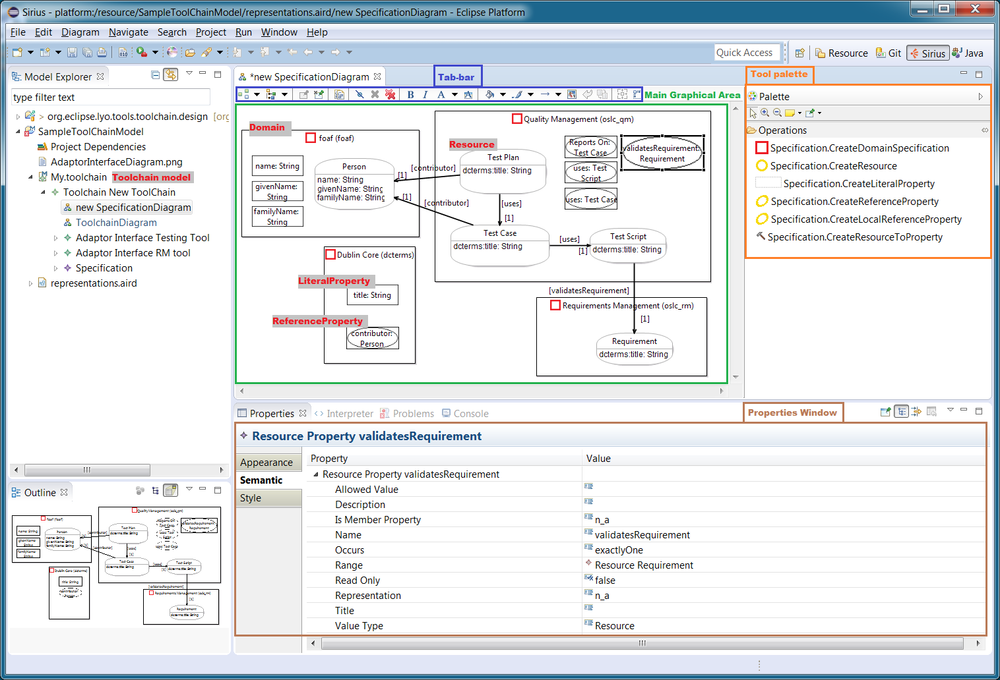

The Eclipse Lyo project supports Java developers with the development of REST-based servers and clients that need to share heterogeneous information as RDF resources.
Eclipse Lyo promotes the use of Linked Data principles and the OSLC (Open Services for Lifecycle Collaboration) standard for publishing lifecycle data, to enable the interoperability of heterogeneous products, services, and other distributed network resources.
OSLC4J SDK
Lyo’s central component is the OSLC4J SDK (Software Development Kit) that helps build REST-based servers and clients, compliant with the OSLC standard.
The library provides:
- Annotations that automate the marshaling/unmarshaling of Java objects to/from Linked Data RDF resources (Apache Jena model).
- Annotations that allow servers to publish their RESTful API capabilities, based on the [OSLC Discovery][oslcv3discovery] approach. This in turn facilitates for clients to discover and use available capabilities.
- JAX-RS Providers and utility classes to facilitate the development of REST operations for accessing, creating, updating and deleting RDF resources.
You do not have to use the Eclipse application to use the OSLC4J SDK: Although much of the documentation assumes you will be using Eclipse, the SDK is available as maven libraries, as detailed Setup an OSLC Provider/Consumer Application.
Further Information
- Explore our tutorial to use the OSLC4J SDK when building an OSLC provider or consumer application.
- How to setup an OSLC provider/consumer applications, ready for Lyo-based development.
Lyo Designer
Lyo Designer is an Eclipse plugin that allows one to graphically model (1) the overall system architecture, (2) the information model of the RDF resources being shared, and (3) the individual services and operations of each Server in the system. The figure below shows the information modelling interface:
{width="800"}
Lyo Designer includes a integrated code generator that synthesizes the model into almost-complete OSLC4J-compliant running implementation. The resulting code includes:
- Java classes with appropriate OSLC4J-annotations to reflect the modelled RDF resource shapes
- This automates the marshaling/unmarshaling of Java instances as Linked Data RDF resources.
- JAX-RS Service operations for accessing, updating, creating and deleting RDF resources.
- These operations handle any of the supported formats (turtle, RDF/XML, Json, etc.)
- For debugging purposes, JSP pages are also produced to deliver HTML representations of all RDF resources.
- JAX-RS Service operations to completely handle Delegated UI for both creation and selection dialogs.
- Including the initial generation of basic JSP pages for the html-representation of the dialogs.
- JAX-RS Service operations to handle Resource Preview
- Including the initial generation of basic JSP pages for the html-representation of the resource previews.
Lyo Designer supports incremental development, where manual changes to the generated code are preserved upon changes to the model, and subsequent code regeneration.
Further Information
- How to install Lyo Designer
- How to use Lyo Designer to model a toolchain and generate an initial code base
- How to use Lyo Designer to model domain specifications, and generate OSLC4J-annotated Java classes to reflect the defined OSLC Resources.
- If you want to contribute to Lyo Designer, you can work from its source code
Additional components
Additional components of the Lyo project include:
OSLC Client provides helpful APIs to interact with OSLC Servers. It provides an additional layer of functionality on top of Apache HttpClient, Apache Wink, and OSLC4J that can give you a head start on some of the common use cases such as form login, OAuth handling, service discovery, sending queries, and processing query results. Io order to use it, include the following dependency from the Eclipse Maven repositories:
<dependency>
<groupId>org.eclipse.lyo.clients</groupId>
<artifactId>oslc-java-client</artifactId>
<version>2.4.0</version>
</dependency>Find more information in the Javadocs.
Other components:
- OSLC Tracked Resource Specification (TRS) SDK - provides a simple set of java beans that represent the entities within the TRS specification.
- Lyo Store - a library that provides a simple interface for working with a triplestore via Java objects representing OSLC Resources.
- Test Suite - provides a suite of tests which will test OSLC domain provider implementations against the specification.
- Reference Implementations - See how OSLC works directly with working samples and with a simple server to test against.
- Reference Implementations (OUTDATED) - a simple, bare-bones reference implementation of the OSLC specifications. RIOs are intended to help those who are adopting OSLC by providing a functioning system that can be explored via a simple UI and REST services, or by taking a look at the source code.
- Perl libraries and samples: modules for Perl for interacting with OSLC providers, including the Net-OSLC PERL library
- OSLC4JS Javascript OSLC library (experimental).
Example OSLC4j-based Servers
Lyo also includes instructions and source code for a range of OSLC Server implementations:
- Bugzilla - an example of what Eclipse Lyo can be used for, in the form of an OSLC-CM compatible adapter for the Bugzilla bugtracker application. It wraps Bugzilla (interacting with it through Bugzilla's native XMLRPC API) with an OSLC-CM provider server accessible through REST calls.
- Sample OSLC client - that demonstrates how to use the Lyo client to interact with OSLC Service Providers in various ways.
- SharePoint - This SharePoint adapter looks through the sharepoint OData collections for collections where the ContentType is defined as "Document". For each SharePoint library that contains documents, an OSLC service provider is created with the basic services for OSLC Delegated dialogs for selection and creation as well as listing the documents with a UI preview.
- The Hudson and Jenkins adapor implements the OSLC Automation specification.
- Simulink
- MagicDraw
- The Lyo LDP reference implementation - is a sample Java implementation of the W3C Linked Data Platform 1.0 Candidate Recommendation using JAX-RS (Apache CXF) and Jena TDB.